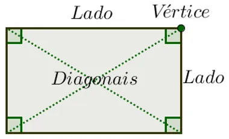

Retângulo
Elementos de um Retângulo
Por serem polígonos, os retângulos possuem os seguintes elementos:
- Lados: são os segmentos de reta que formam o contorno de um retângulo;
- Vértices: são os pontos de encontro de dois lados;
- Diagonais: são os segmentos de reta cujas extremidades são dois vértices não consecutivos do retângulo;
- Ângulos internos: São os ângulos de 90°, formados no encontro de dois lados.

Os retângulos fazem parte do grupo dos quadriláteros conhecidos como paralelogramos. Os outros dois grupos de quadriláteros são trapézios e outros.
Propriedades de Retângulo
Todo retângulo é paralelogramo, por isso, herda as características e propriedades dos paralelogramos, a saber:
- Lados opostos são congruentes;
- Ângulos opostos são congruentes;
- As diagonais cortam-se ao meio;
- Ângulos adjacentes são suplementares;
- A soma dos ângulos internos de um retângulo é igual a 360°.